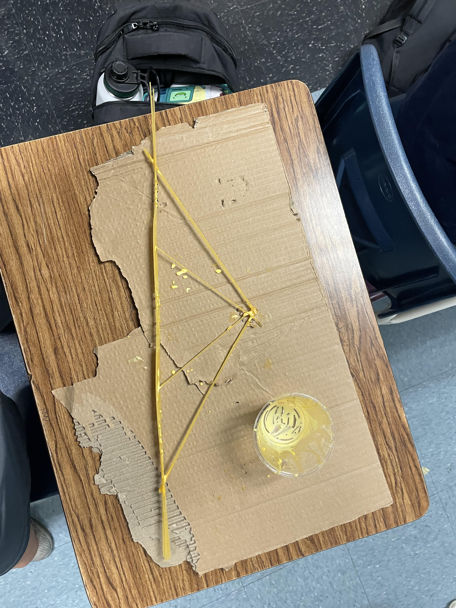

All we did was choose whos Rude Goldberg machine we wanted to build, then started building them. For our challenge day we made paper boats and put weights with them, then we saw whos last the longest. Ours stayed up for 5 minutes.
This week we finished working on our Rube Goldberg machines. We also tested them on Friday but I was sick on that day.
This week we made cads of prosthetics for animals of our choice. I made tail fins for a shark because there are a ton of people who cut off the fins of sharks and just leave them to die in the ocean. The idea behind the tail is that its like a glove and it will follow the motion of the tail to propel the shark through the water. Four our challenge day we made pb and j sandwichs to demonstrate how specific we have to be with our code.
This week we created and tested our rocket. I wasnt here to build our rocket but our rocket had a parachute that would shoot out of the top as it came down. Saddly our rocket didnt work because it was leaking air and water and it would just lose the pressure in the bottle.
This week we learned about circuits and tinked them on tinkercad. There was no challenge day.
We continued to learn about circuits and used real circuits, bread boards, and leds. We didn't have to much toruble creating the curcits because it was very similar to tinkercad.
We used the arduino wev editor to flash in different patterns. For this weeks challenge me and my partner (Justin Gutierrez) we went around the school trying to find out if there were more wheels or doors in the school and we ruled that there were more wheels then doors.
This week we learned about civil engineering and our next projet was making a spaghetti bridge. We had to make different spaghetti bridges with different iterations and try to make the best bridge that can hold the most amount of water for the bridges weight.
We made our first spaghetti bridge and used Julian's CAD design which was 24 inches long and had support beams on the top. We could only use 20 noodles per bridge and we had 100 noodles, so we had 5 attempts. After we created our first iteration we tested it at the end of the week but the bridge broke after holding a cup of water. A syrafoam cups worth so I heard, I was absent :p.
We (aka Julian) started on our second iteration decided to try and make the middle more flexible with large amounts of glue. Unfortunately the bridge ended up warped and cracked on various areas. I then started by making our BEST and final bridge.
This was finals week so I added out final touches to our bridges. We ended up being the one of the last ones testing. When we first tied the bucket to the bridge the middle already started to bend but it ended holding one cup of water like the first moddle so I guess it didn't end up being worse then our first iteration. We didn't move forward making a better bridge but we didn't go backwards making a worse bridge so thats alrighty i guess.
For our project we decided to build a mouse trap car. We started the first week by researching factors that would effect our car like how to reduce friction on the wheels or over all distance the car would move. We finished the first week by starting the cad for our first iteration. For the second week we finished off the cad and then decided what cad we wanted to use. We also started building our first desin for the car. For the third week we finished the the first design and tested it for the first time. For our second iteration one of the problems was that the wheels were wobbly on the axel of the car so we added cardboard squares on each side of the wheels to keep it straight. That design ended up being our final design that performed fairly well. Our car would have went far but we didnt align the wheels straight enough so the car turned, and it turned straight into the wall.
Mousetrap Car Video
We were assigned for the next two weeks to work on our egg drop project. Our task was to protect an egg from breaking after being dropped from a 3 story building. We used straws to create a box to absorb the some of the force from the crash. We also encased the egg with cotton balls to reduce the impact more. We also added a parachute to our capsule wich ended up being the best addition to our project. The parachute slowed our egg capsule down so it landed softer. Our capsule ended up working, barely bending a straw. We decided to try again without the parachute and the egg cracked.
We started our final project which is to create a boat that can cross the school swimming pool and go back. The boat has to hold 2 of our group members and since me and Julian are the lightest we are going to be in the boat. The hardest challenge seems to be just getting the boat to be able to float.
We have been making our boats for a week and we have created our tinkercad and started putting our boat together. We cut out our shapes with cardboard and taped it all together. We also created our padels. We need to secure any holes with duct tape so no water gets through and probably reinforce the bottom with duct tape so it is stronger.
We have created the base shape of our boat. We need to get tape from Mr.Kim so we can start putting it together but until then we made our paddles, which is essentially squares with duct tape handles because we want to have a digging motion in the water.
This week we put together most of our boat with duct tape. We still had to reinforce it a little with the left over tape we have but the boat is all put together.
We finished taping and reinforceing our boat this week and we were pretty much done. One day of the week we had Justin become Leonardo Da Vinci and decorate our boat. We named our boat the FBB standing for the Filipion Baby Boys. Justin put a giant FBB on one side of the boat and a Filipino sun with waves on the other side. On Friday we had a challenge day but the seniors in our group werent here so me and Justin joined up with another group. We were tasked with making a paper roller coaster and we created a basic roller coaster but me and Justin ended up getting distracted and we made ninja stars.
We were all done with our boat so we didn't really do much. We just relaxed.
This week was the same as last week. We just chilled waiting to finally test our boat. We didnt touch our boat at all. On friday we had another challege to make a book case out of paper that couldnt be kncoked over and I was partnered with Justin. Me and Justin made the best bookstand in the class. It went through a lot of iterations but our final design had a piece of paper that hugged the book and had a rocking chair style bottom that rocked the book whenever it was hit. Mr.Kim said he hasn't seen anyone else have a desing like ours. This was a fun challenge day.
This was the best week out of the entire school year, and we finally tested our boat. We had a lot of spectators at the pool which I didnt expect. The tape of our boat was coming off a little bit before we even put our boat in the water but that was ok. Me and Julian were the ones supposed to get in the boat and I forgot we were testing our boats today so I forgot my swim trunks lol. Anyways when it was finally our turn to test we decided to put our boat in sideways then straighten it out after we got in. The problem was when I got in I immediately noticed a leak at the bottom of the boat. We tried to paddle but eventually our boat toppled over. Me and Julian ended up swimming our dead boat to the other side and taking it out then cleaning up the scraps in the pool. In total only 2 boats made it across and back. After we chilled until the end of class literally it was really cold being wet from the pool. This was not only the best week of the school year but the worst because it was the end. We had to say goodbye to seniros Benedict, Julian, and Tristan. They will be missed.
Group Boat Final LinkThis is the fianl journal update. Today is our fianl day and last day in the class. Julian, Benedict, and Tristan already left so its just me and Justin today. I am just updating the last few weeks of our journal but I also just wanted to say this was probably the best school year I've had. It was fun meeting my new groupmates but also sad seeing them leave and graduate. This was my favorite class out of all the classes I have had in high school and I just wanted to say Mr.Kim THE GOAT!!!!!